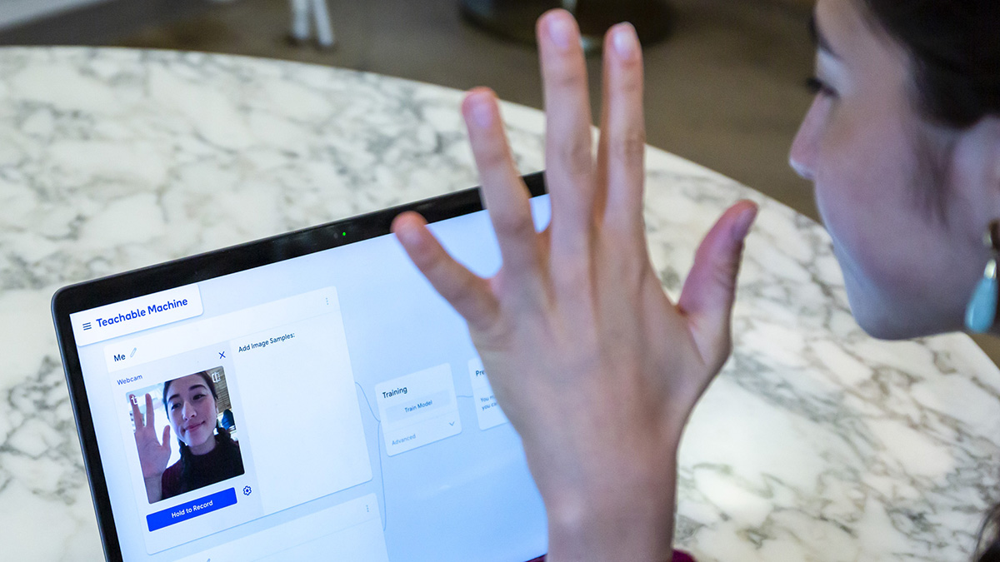

Teachable Machine는 웹기반 도구로서 누구나 쉽고 빠르게 기계 학습 모델을 학습시킬 수 잇습니다. 2017년에 시작하여 2019년에 새롭게 런싱하였습니다. 전문 지식 없는 저같은 코딩 초보도 쉽게 이용할 수 있습니다.
수집과 분류 공유등의 순서로 이루어집니다. 수집에서는 내가 원하는 작업의 클래스나 범주의 예제를 수집하고 그룹화하는 작업을 합니다. 예를 들어 사과를 학습시키기위해서는 사과 이미지를 모아모아서 사진을 올려주기만하면 됩니다. 그러면 Teachable Machine는 올린 사과 이미지를 학습하게됩니다. 분류에서는 모델 학습이 이루어 진 뒤에 바로 테스트하여 새 예제가 올바르게 분류가 되었는지 확인하게됩니다. 공유는 사과를 학습시켰다면 사이트 ,앱 등으로 프로젝트를 보낼 수 있습니다. 프로젝트의 JAVA 및 HTML과 같은 소스로 불여들여 작업을 수행 할 수 있습니다.
또한 사이트로 구성이 되어 스마트폰으로도 바로바로 결과를 확인 할 수 있습니다. 온라인에서 무료로 호스팅이 지원이 되어 가능합니다. 이미지 학습외에도 목소리 모션을 지원합니다. 웹캡이나 마이크 데이터를 장치에서 완전히 사용하고 선택할 수 있습니다. 소리에서는 짧은 소리 샘플을 녹음하여 오디오를 분류하고 학습시킬수있습니다. 소리 샘플을 이용하여 동물의 울음소리를 추출하여 어떠한 동물인지를 구분 시킬 수있고 사람의 목소리를 비슷한 사람목소리로 찾을 수 있을 거 같습니다. 모션에서는 웹캠이나 파일또는 포즈를 사용하여 신체 위치를 분류하는 모델을 학습시킵니다. 헬스트레이너의 동작을 학습시켜 자신이 그 헬스트레이너와 비슷하게 모션을 취하고 있는지 확인을 할 수 있습니다. 헬스를 제외한 요가나 필라테스 기타 운동의 모션등을 학습시켜 다양한 콘텐츠를 만들수있습니다. 이미지,소리,모션 학습을 통해 다양한 작업을 할 수 있습니다. 누구나 쉽게 이용할 수 있습니다.
저 또한 간단한 유튜브의 영상을 통해 학습을 할 수 있었습니다. Teachable Machine으로 만드는 모델은 자바 스크립트가 실행되는 모든 곳에서 작동하는 실제 Tensorflow.js 모델이므로 Glitch, P5.js, Node.js 등과 같은 도구를 사용하여 훌륭하게 작동합니다. 또한 Coral , Arduino 등과 같은 다른 곳에서 모델을 사용하려면 다른 형식으로도 내보낼수 있습니다.
